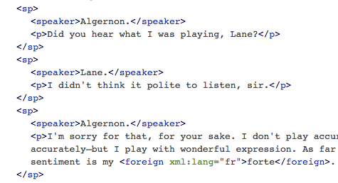
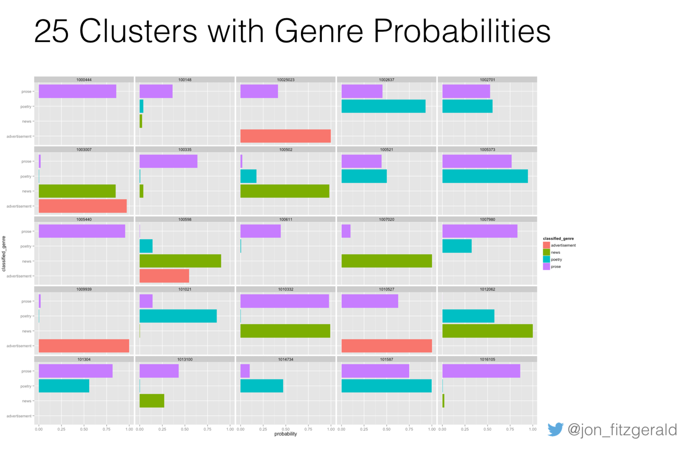

class: middle # Computational Methods in Authorship Studies: ## <em>Willa Cather as a Case Study</em> Matthew J. Lavin Clinical Assistant Professor of English and Director of Digital Media Lab University of Pittsburgh February 2017 <p class="running-footer">Find @mjlavin80 on Twitter for links</p> --- class: middle ## History of Authorship: - subfield of the history of the book ## Book History: - inception, production, publication, circulation, and reception of any written and printed material ## Bibliography: - the precise description of books as physical objects <p class="running-footer">Find @mjlavin80 on Twitter for links</p> --- class: middle ## For the most part, the distant reading or big data trend “is not one that has spoken to book historians” (410). Matthew Kirschenbaum and Sarah Werner, "State of the Discipline", <em>Book History</em> 2014 <p class="running-footer">Find @mjlavin80 on Twitter for links</p> --- class: middle ## Loren Glass, <em>Authors Inc</em> - “Trademark Twain” - “Legitimating London” ## Meredith McGill, <em>American Literature and the Culture of Reprinting</em>: - “Suspended Animation: Hawthorne and the Relocation of Narrative Authority” (Wordplay encouraged but not required) <p class="running-footer">Find @mjlavin80 on Twitter for links</p> --- class: middle ## O'Brien - deferential daughter of two fathers (288) ## Thacker - gift of sympathy, autobiographical realism (126) ## Williams - ghost as the power of an open secret, "deconstructs and destabilizes" traditional male autobiography (26) ## Zitter - "channeled her autobiographical voice into her fiction" (283) <p class="running-footer">Find @mjlavin80 on Twitter for links</p> --- class: middle <img src="../images/xkcd_computer.png"/> ## “Actually, I’ve studied this issue with a computer program, and you’re all wrong.” (I hope this isn't me) <p class="running-footer">Find @mjlavin80 on Twitter for links</p> --- class: middle # Burrows's Delta <p class="running-footer">Find @mjlavin80 on Twitter for links</p> --- class: middle ## High Frequency Function Words > #### the, be, to, of, and, a, in, that, have, I, it, for, not, on, with > #### and many more > #### some AA methods remove personal pronouns or "cull" words not shared by all candidates <p class="running-footer">Find @mjlavin80 on Twitter for links</p> --- class: middle # Summary of Findings - Cather texts of various genres, dates, and lengths are more similar to the autobiography than <em>Obstacles to Peace</em> is. - Results hold true for serial and books version, using culling=0 and culling=100 - Mean margins of victory for book version are slightly smaller than magazine version, but not significant enough for me to link them to any specific edits. - Any changes McClure made to the book version of the autobiography were not extensive enough to swing the results of these tests to him. <p class="running-footer">Find @mjlavin80 on Twitter for links</p> --- class: middle > Serial Version. Function Words Not Present in All Three Texts Ignored (cull=100). Margins of Difference Scaled to Delta. <p class="running-footer">Find @mjlavin80 on Twitter for links</p> --- class: middle <img align="center" style="display: block; margin-left: -30px; margin-top: -50px; width: 100%; " src="../images/serial_margins_no_cull_labels.png"/> > Serial Version. No Function Words Ignored (cull=0). Margins of Difference Scaled to Delta. <p class="running-footer">Find @mjlavin80 on Twitter for links</p> --- class: middle > Top Six Margins, Serial Version, Culling <p class="running-footer">Find @mjlavin80 on Twitter for links</p> --- class: middle > Top Six Margins, Serial Version, No Culling <p class="running-footer">Find @mjlavin80 on Twitter for links</p> --- class: middle > Top Six Margins, Book Version, Culling <p class="running-footer">Find @mjlavin80 on Twitter for links</p> --- class: middle > Top Six Margins, Book Version, No Culling <p class="running-footer">Find @mjlavin80 on Twitter for links</p> --- class: middle ## Computer-assisted hermeneutics vs. computational text analysis - #### e.g., scholarly editing, TEI - #### Uses computers - #### Rely on hermeneutic or interpretive work - #### Often engage in argument by prototype - #### Often part of a pipeline for quantitative or scaled computation <p class="running-footer">Find @mjlavin80 on Twitter for links</p> --- class: middle  TEI Markup, <em>The Importance of Being Earnest</em> <p class="running-footer">Find @mjlavin80 on Twitter for links</p> --- class: middle ## Direct measures - #### Term counts - #### Type-token ratio - #### Parts-of-speech - #### Collocations - #### Named entity recognition - #### Sentiment scores <p class="running-footer">Find @mjlavin80 on Twitter for links</p> --- class: middle ## The Alice Problem <table class="table table-bordered table-hover table-condensed"> <thead><tr><th title="Field #1" ></th> <th title="Field #2">term</th> <th title="Field #3">lucy</th> <th title="Field #4">susan</th> <th title="Field #5">dorothy</th> <th title="Field #6">wendy</th> <th title="Field #7">alice</th> </tr></thead> <tbody><tr> <td align="right">0</td> <td>saw</td> <td>-----</td> <td>-----</td> <td>XXXXX</td> <td>XXXXX</td> <td>-----</td> </tr> <tr> <td align="right">1</td> <td>picked</td> <td>-----</td> <td>-----</td> <td>XXXXX</td> <td>-----</td> <td>-----</td> </tr> <tr> <td align="right">2</td> <td>story</td> <td>-----</td> <td>-----</td> <td>-----</td> <td>XXXXX</td> <td>-----</td> </tr> <tr> <td align="right">3</td> <td>queen</td> <td>XXXXX</td> <td>XXXXX</td> <td>-----</td> <td>-----</td> <td>-----</td> </tr> <tr> <td align="right">4</td> <td>exclaimed</td> <td>-----</td> <td>-----</td> <td>XXXXX</td> <td>-----</td> <td>XXXXX</td> </tr> <tr> <td align="right">5</td> <td>went</td> <td>-----</td> <td>-----</td> <td>XXXXX</td> <td>-----</td> <td>XXXXX</td> </tr> <tr> <td align="right">6</td> <td>little</td> <td>-----</td> <td>-----</td> <td>-----</td> <td>-----</td> <td>XXXXX</td> </tr> <tr> <td align="right">7</td> <td>returned</td> <td>-----</td> <td>-----</td> <td>XXXXX</td> <td>-----</td> <td>-----</td> </tr> <tr> <td align="right">8</td> <td>asked</td> <td>XXXXX</td> <td>XXXXX</td> <td>XXXXX</td> <td>-----</td> <td>XXXXX</td> </tr> <tr> <td align="right">9</td> <td>could</td> <td>XXXXX</td> <td>-----</td> <td>XXXXX</td> <td>XXXXX</td> <td>XXXXX</td> </tr> <tr> <td align="right">10</td> <td>presently</td> <td>-----</td> <td>XXXXX</td> <td>-----</td> <td>-----</td> <td>-----</td> </tr> <tr> <td align="right">11</td> <td>together</td> <td>-----</td> <td>-----</td> <td>-----</td> <td>-----</td> <td>XXXXX</td> </tr> <tr> <td align="right">12</td> <td>heard</td> <td>-----</td> <td>-----</td> <td>-----</td> <td>-----</td> <td>XXXXX</td> </tr> <tr> <td align="right">13</td> <td>thought</td> <td>XXXXX</td> <td>-----</td> <td>XXXXX</td> <td>-----</td> <td>XXXXX</td> </tr> <tr> <td align="right">14</td> <td>answered</td> <td>-----</td> <td>-----</td> <td>XXXXX</td> <td>-----</td> <td>-----</td> </tr> <tr> <td align="right">15</td> <td>began</td> <td>-----</td> <td>-----</td> <td>-----</td> <td>-----</td> <td>XXXXX</td> </tr> </tbody></table> <p class="running-footer">Find @mjlavin80 on Twitter for links</p> --- class: middle ## Comparative measures - ### Any of the the previous, comparing two or more texts <p class="running-footer">Find @mjlavin80 on Twitter for links</p> --- class: middle ## Dimmit et. al. "Exploring the Intersection of Personal and Public Authorial Voice in the Works of Willa Cather," <em>Digital Scholarship in the Humanities</em> <p class="running-footer">Find @mjlavin80 on Twitter for links</p> --- class: middle ## Change over time - ### Germanic-Latinate ratio in literature, 1700-1920 (Underwood and Sellers) - ### Repetition in 19th Century American Fiction (Gemma et al) <p class="running-footer">Find @mjlavin80 on Twitter for links</p> --- class: middle Underwood and Sellers, "The Emergence of Literary Diction" <p class="running-footer">Find @mjlavin80 on Twitter for links</p> --- class: middle ## Clustering, classification - ### Topic modeling (Blei and Lafferty) - ### Machine learning (Houston and Audenaert) - ### Topic modeling and machine learning, with book historical concerns (Cordell, Fitzgerald) <p class="running-footer">Find @mjlavin80 on Twitter for links</p> --- class: middle  Fitzgerald, "What Made the Front Page in the 19th Century?: Computationally Classifying Genre in 'Viral Texts'" <p class="running-footer">Find @mjlavin80 on Twitter for links</p> --- class: middle ## Choice of features - #### High frequency function words - #### N-grams - #### Term frequencies - #### Parts of speech - #### Sentiment scores - #### Shape of text block - #### Other bibliographical identifiers? <p class="running-footer">Find @mjlavin80 on Twitter for links</p> --- class: middle Linguistically annotated version, <em>King Henry VII: or the popish imposter</em> <p class="running-footer">Find @mjlavin80 on Twitter for links</p> --- class: middle ## Choice of feature blocks - ### A novel - ### Novels in a span of years - ### A chapter or excerpt - ### A TEI element or group of elements (e.g. all lines spoken by Hamlet) - ### TEI or other elements of book historical interest (an installment, a preface) <p class="running-footer">Find @mjlavin80 on Twitter for links</p> --- class: top ## Bibliography - Binongo, José Nilo G. "Who Wrote the 15th Book of Oz? An Application of Multivariate Analysis to Authorship Attribution." Chance 16.2 (2003): 9–17. Print. - Blei, David M., and John D. Lafferty. "A Correlated Topic Model of Science." The Annals of Applied Statistics 1.1 (2007): 17–35. Print. - Dimmit, Laura et al. “Exploring the Intersection of Personal and Public Authorial Voice in the Works of Willa Cather.” Digital Scholarship in the Humanities 30.suppl_1 (2015): i36–i42. academic.oup.com. Web. - Fitzgerald, Jonathan D. “What Made the Front Page in the 19th Century?: Computationally Classifying Genre in ‘Viral Texts.’” N.p., 2016. Print. - Gemma, Marissa, Frédéric Glorieux, and Jean-Gabriel Ganascia. "Operationalizing the Colloquial Style: Repetition in 19th-Century American Fiction." Digital Scholarship in the Humanities (2015): fqv066. dsh.oxfordjournals.org. Web. - Glass, Loren Daniel. Authors Inc: Literary Celebrity in the Modern United States, 1880-1980. New York: NYU Press, 2004. Print. --- class:top ## Bibliography - Houston, Natalie, and Neal Audenaert. "Visual Page: Towards Large Scale Analysis of Nineteenth-Century Print Culture" 2013 IEEE International Conference on Big Data. October 2013. 9-16. - Kirschenbaum, Matthew, and Sarah Werner. “Digital Scholarship and Digital Studies: The State of the Discipline.” Book History 17.1 (2014): 406–458. Project MUSE. Web. - Liddle, Dallas. "Genre: 'Distant Reading' and the Goals of Periodicals Research." Victorian Periodicals Review 48.3 (2015): 383–402. Project MUSE. Web. - McGill, Meredith L. American Literature and the Culture of Reprinting, 1834-1853. University of Pennsylvania Press, 2013. Project MUSE. Web. 22 Feb. 2017. - O’Brien, Sharon. Willa Cather: The Emerging Voice. Cambridge: Harvard University Press, 1997. Print. - Thacker, Robert. “‘It’s Through Myself That I Knew and Felt Her’: S. S. McClure’s My Autobiography and the Development of Willa Cather’s Autobiographical Realism.” American Literary Realism 33.2 (2001): 123. Print. --- class:top ## Bibliography - Underwood, Ted, and Jordan Sellers. "The Emergence of Literary Diction." Journal of Digital Humanities 1.2 (2012): 1–2. Web. - Williams, Deborah Lindsey. “Hiding in Plain Sight: Willa Cather and Ghost Writing.” Willa Cather Pioneer Memorial Newsletter and Review 43 (1999): 25–31. Print. - Zitter, E. S. “Making Herself Born: Ghost Writing and Willa Cather’s Developing Autobiography.” Biography 19.3 (1996): 283–301. Print.